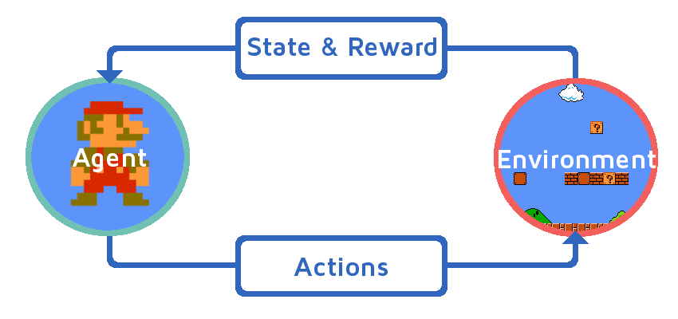
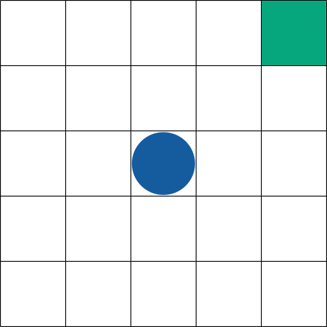
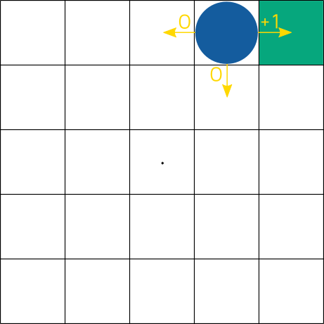
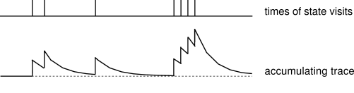
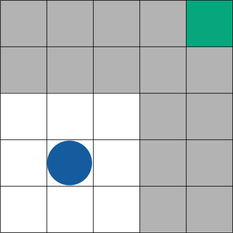
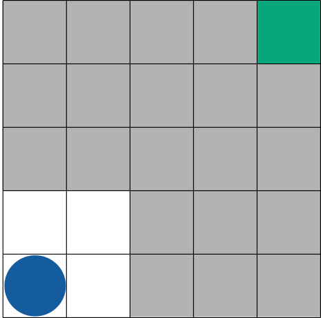

"When a configuration is reached for which the action is undetermined, a random choice for the missing data is made and the appropriate entry is made in the description, tentatively, and is applied. When a pain stimulus occurs all tentative entries are cancelled, and when a pleasure stimulus occurs they are all made permanent." - Alan Turing (1948)
Reinforcement Learning deals with problems where an agent needs to learn to interact with its environment through a number of actions and try to maximise the total reward it gets over time. The core of it lies in the fact that the agent is not taught what actions to take when but has to discover this on its own through its repeated interactions with the environment. This feels natural to us since it's an integral part of how humans or animals learn and much of the techniques developed are inspired by Psychology and Neuroscience.
RL is huge right now. It's changing the world around us with Self-Driving Cars, beating professional gamers at retro games, Doom!, beating world champions at games considered impossible for computers to solve just years ago (Go, Backgammon, Chess), Quantitative Finance,Making Data Centers more Energy Efficient, Robotics and so much more.
While most of the key concepts in Reinforcement Learning were decades ago, explosive success in Deep Learning has given a second wind to Reinforcement Learning and techniques combining them are often called Deep Reinforcement Learning.
The goal of writing this introductory series of posts is to show how simple but powerful the key ideas in RL are and how easy it is to get an understanding of what the state of the art performing system as of last year was. I'll make it a point to explain the math as simply and intuitively as I possibly can and luckily, a lot of the math behind RL is very easy to understand through visualization. Before I actually start with anything, I'd like to point out that if you'd like to know more about Reinforcement Learning, Sutton & Barto's Book on RL is very approachable even without too much background knowledge and considered a bible. I'll be using this book heavily throughout. I'll also be sticking to their notation since it's popular and will hopefully be easier to look things up from there when it's needed.
The Reinforcement Learning Problem
Reinforcement Learning solves a class of problems where an agent needs to learn to interact with the environment through a number of actions it can perform in order to maximize its total reward and achieve its goal.

In the typical game scenario like Mario, Mario's the agent and what we see on screen is the environment. The 4 keys for movement as well as the "a" and "b" keys are actions to the game as well as "do nothing". The agent interacts with the environment by picking some actions to perform at every time step and this changes his state and gives him some rewards. Positive rewards can be in the form of an increase in score and a large negative reward for the loss of life or a game-over. We could also set a small negative reward for time taken to encourage our agent to finish the round as quickly as possible.
Let's look at the typical components of an RL system in the context of a simple environment often called gridworld.
- State ($s$): The state is the what the agent can observe of an environment. It's the data the agent has to make its decisions based on. Typically, this consists of things like sensor readings in robotics or plain images. In a simple example shown below, we have our agent denoted by the blue ball in the maze with the end state in green. This entire maze and all the pieces in it denotes the state of the game and describes what the agent sees.

- Action ($a$): An action a is one of the possible actions that the agent can perform. The example below shows the agent can choose either to move North, South, East or West.
- Reward Function ($R^a_{ss'}$) and Reward Signal ($r$): At every time-step, the agent receives a reward signal ($r$) from the environment. This reward signal is some number the agent receives as it's reinforcement- either positive or negative, to decide whether something it's doing is good or bad. In our little maze, we get a reward of +1 for moving from some state to the goal state (in green) and a 0 for everything else. This +1 reward, therefore, needs to incentivise the agent to get to that goal state somehow since that's the only way to get the reward. Mathematically, the reward function $R^a_{ss'}$ generates a reward signal $r$ when the agent moves from state $s$ to $s'$ while performing the action $a$

- State-Transition Function($P^a_{ss'}$): A state transition function governs how an agent in one state goes to the next when it performs a particular action. This state transition function is either deterministic where an action always takes you to that same state or is stochastic to model games of chance like the probability of drawing a particular card in Poker or a dice roll. This includes situations like "Opening treasure chest has a 20% chance of getting you the key". Abstractly, this would be represented like: $P$(near_chest,open_treasure,got_key) = 0.2.
The Reward Function and the State-Transition Function are typically part of the Environment Dynamics and may not be directly accessible by the agent.
- Policy ($\pi$): The aim of an RL algorithm is to find a Policy that tells the agent how to act given a state. An agent keeps trying to find a better policy that allows it to get more reward in the long-term. It does this by looking at which one of its actions are more likely to produce high reward and prefers those over lower ones.
With these values defined, we can visualize one time-step as a tree of possible agent interactions with the environment. This will help us understand something called backup diagrams we'll look at later and makes it easier to see how all of these values come together.
We can see from the above figure that an agent in state s picks an action a (either N, S, E, W) with a probability given by the policy $\pi$ it's following. Based on the Environment Dynamics (State Transition Function), the agent can end up in one of two states for each action and receive a reward for the transition. To make things a little more formal, this setup is based on something called Markov Decision Processes (or MDP). Like we mentioned above, an MDP has a set of possible states, actions, rewards for being in a state and performing an action and the probability of transitioning from one state to the next given an action was performed. Below is the typical representation of an MDP.

As mentioned before, the end goal of this is to derive a policy and there are a couple of ways it can be done. We can either estimate it directly (by estimating a Policy Function using Policy Gradient Methods) or indirectly (by finding intermediate functions and deriving a policy from that). We'll first look at the indirect way to solve this MDP and find the optimal behaviour by estimating something called a value function.
Value Function ($v$)
A value function is a measure of how "good" a state is. Given a state $s$ and you're following a policy $\pi$, it's value $v^{\pi}(s)$ is the expected total reward of being in that state. In other words, The value of the state is the total amount of reward an agent can expect to accumulate over time starting from that state.
Since I mentioned the term Expected total reward, let's take a quick look at what an Expected Value from Probability Theory is. Suppose a random variable X can take value $x_1$ with probability $p_1$, value $x_2$ with probability $p_2$, and so on, up to value $x_k$ with probability $p_k$. Then the expectation of this random variable X is given by
\begin{equation} \operatorname{E}[X] = \sum_{i=1}^\infty x_i\, p_i \end{equation}
Simply put, consider a game where I win \$2 whenever I roll a 6 with a dice and lose \$0.5 for every other number, my Expected Value or the value of money I expect to win/lose if I keep playing for a long, long time is simply the sum of values multiplied by the probability it occurs. For this example, it would be $2$x$\frac{1}{6}+(-0.5$x$\frac{5}{6})=-0.833$ so it probably doesn't make sense to play the game.
Going back to the Value Function, it's represented by this complicated looking but surprisingly simple equation:
\begin{equation} v^{\pi} (s) = \sum_{a \in A} \pi(a|s) (\sum_{s'\in S} P^a_{ss'}(R^a_{ss'} + \gamma v^{\pi}(s')) \end{equation}
The first $\sum_{a \in A} \pi(a|s)$ term is just a way of representing the fact that we have multiple actions we can perform and the probability of picking an action given the current state is given by the policy($\pi$) we're currently following. This represents the first level of the backup diagram shown below.
The next $\sum_{s'\in S} P^a_{ss'}$ part is a way of saying there are multiple states we could end up in after we've picked our action (for stochastic environments) and the State Transition Function gives us a probability assigned to each of the possible target states. This is represented by the second level of the backup diagram.
Let's put aside the summation for now and focus on just one of these values. The multiplication of the terms $\pi(a|s)$ and $P^a_{ss'}$ gives us the probability of starting in some state $s$, picking an action $a$ and ending up in state $s'$. This gives us the "$p_i$"s to calculate the expected value.
Now, the term $(R^a_{ss'} + \gamma v^{\pi}(s'))$ is the essentially the reward received in transitioning from $s \rightarrow s'$ (while picking the action $a$) and the value at that new state $v^{\pi}(s')$. Put another way, this sum is the total reward I get for going to this new state and all the future rewards I can get from being in that new state. With this, we have the "$x_i$"s needed to calculated the expected value.
Now all that's left for the $\operatorname{E}[X]$ calculation is the $\sum_{i=1}^\infty$ part and that's what the summation term $\sum_{a \in A}$ is for. This is simpler to see in the gridworld but this whole procedure is actually just saying a state is as good as the reward we get from moving to the neighboring cells and all the rewards we can get from then onwards.
Lastly, the $\gamma$ term is what's called a discount factor. It's a mechanism to weigh the importance of immediate rewards vs rewards far off in the future. A value close to 1 would imply we care about the long-term expected reward while a value closer to 0 means we care more about immediate rewards.
It helps to visualize this process in two stages. One, we look at all the possible states we can end up in (shown in blue below) and then take all those values and "back" them up to the current state (shown in red).
To see how this actually works in action, let's describe a game that was partially introduced already - gridworld. As the name suggests, it's simply a 2D nxn grid where the agent occupies one position of the grid. At each point, there are 4 possible actions- North, South, East or West. The agent starts off in one of these cells and needs to reach the goal state for which it receives a +1 reward.In our gridworld, we know exactly where we'll end up if we try going North so $P^a_{ss'}$=1 for that $s'$ and 0 for everything else. We can simplify the equation to reflect this by
\begin{equation} v^{\pi} (s) = \sum_{a \in A} \pi(a|s) (R^a_{ss'} + \gamma v^{\pi}(s')) \end{equation}
One thing to note is the fact the definition of v uses the v of it's neighbors i.e- it's recursive and as we require for all recursive definitions, we need an initial value for the Value Function. Typically, we just initialize all the values with zeros and run this formula over and over again for every state and eventually, we'll reach a point where the values don't change much from one iteration to the next and this we consider is the Value Function of the environment. We can see how these values initialize and propagate in the Policy Evaluation section below.
Policy Evaluation
Policy Evaluation is a way to evaluate an already known policy and see how well you'd perform following it. It's a direct application of the above value function equation. This is a simplistic example to show how values propagate over time and slowly converge towards their true values in gridworld.
| Policy | ||
A code snippet to see how Policy Evaluation can be implemented in Python is given below:
Show/Hide Code
def evaluate_policy(policy): ''' Policy evaluation implementation. Checks for tolerance by looking at the maximum difference between values from one iteration to the next. ''' V = np.zeros(MAP.shape,dtype=np.float32) #Initialize the Values to zero with the size of the map maxdiff = tol+1 while maxdiff>tol: maxdiff=0. for src in states: (y,x) = src if not is_valid_location(src): continue #Don't evaluate for blocked squares v = 0 for a in get_valid_actions(src): #Iterate through all possible actions from current state for target in [(y,x+1),(y,x-1),(y-1,x),(y+1,x)]: #Iterate through all possible end states if is_valid_location(target): v+= policy[src][a]*P(target,a,src)*(R(target,a,src)+gamma*V[target[0],target[1]]) maxdiff = max(maxdiff,abs(V[y,x]-v)) V[y,x] = v #Set V to the updated value. return V
Policy Iteration
Now that we've evaluated our policy, what can we do with it? Since our end goal is to find the best policy, we can make use of this evaluated policy to generate a new policy out of it. We can do this by simply looking at the value function above and at each state, picking the action that will take us to the neighbor with the best value. This is often called acting "greedily" with respect to the policy that we evaluated.
To improve our policy further, we can go for another round of process described above. We can evaluate the greedy policy that we generated and again generate a new (and better) one. This process is known as Policy Iteration. It's shown that this process will eventually converge to the optimal policy $\pi^*$.
A code snippet to see how Policy Iteration can be implemented in Python is given below:
Show/Hide Code
def derive_greedy_policy(V): ''' Derive a greedy policy from the Value Function V ''' Pol = {} for src in states: (y,x) = src maxval = -99 #Initialize with some min value. #Evaluate all the actions and find the one with the maximum value. for a in get_valid_actions(src): for target in [(y,x+1),(y,x-1),(y-1,x),(y+1,x)]: if is_valid_location(target): cval = P(target,a,src)*(R(target,a,src)+gamma*V[target[0],target[1]]) if cval>maxval: maxval,maxaction = (cval,a) #Select the action greedily Pol[(y,x)]={'east':0.,'west':0.,'north':0.,'south':0.} Pol[(y,x)][maxaction] = 1. return Pol def policy_iteration(Pol): ''' Drive the Policy Iteration by calling evaluation and improvement till convergence ''' while True: V = evaluate_policy(Pol) Pol_new = derive_policy(V) if Pol_new == Pol: print("Policy Iteration converged after",i,"steps") break Pol = Pol_new return V
Value Iteration
One way to speed up the above process if we don't need to explicitly derive a policy at each step is to combine the policy evaluation and picking of the greedy action into one like below: \begin{equation} v (s) = \max_{a \in A} \sum_{s'\in S} P^a_{ss'} [R^a_{ss'} + \gamma v_{*}(s') ] \end{equation} This is known as Value Iteration. It can be noticed that it does produce final values similar to policy iteration
Model-Based RL & Model-Free RL
The above method works well and has some nice optimality guarantees but has one major limiting factor: It assumes knowledge about the Reward Function(R) and the State Transition Probability(P). Methods like this which either already have access to or try to learn the environment dynamics and then derive a policy from that are known as Model-Based RL.
Model-Free RL on the other hand directly tries to estimate a measure such as the value function based only on the samples it collected from interaction with the environment without trying to model the environment explicitly. Model-free methods usually come in two major types - Value-Based RL and Policy-Based RL. Value-Based RL tries to learn a value function like above and Policy-Based RL methods try to directly learn a policy from the environment.
Model-Based methods have the advantage of enabling planning by allowing us to use our model of the environment to "look ahead" and see what consequence an action has. However, these are much harder to learn in practice and might not even be possible to model for large, complex systems.
Model-free methods have the advantage of not requiring knowledge of the Environment and are not tied down by how well we can capture these potentially complex environment dynamics. That makes them much simpler to implement and are used much more in practice. However, these methods come at a cost of being purely reactive making high-level planning harder and not being very efficient in using samples collected in interactions with the environment.
One of the most popular ways to do Model Free RL is through a family of methods called Temporal Difference (TD) learning. We'll look at one such TD algorithm called Q-Learning.
Q-Learning
First, let's look at the central idea behind TD learning using one the simplest methods- TD(0).
\begin{equation} v(s) = v(s) + \alpha [(R_{s'}+\gamma v(s')) - v(s) ] \end{equation}
Just like before, the equation starts to make a lot of sense when we start to visualize it. In this case, we do what's called sample backups rather than a full backup because we look at just one target state rather than all the possible target states.
The core idea behind TD(0) is to make a prediction of what we think the value of that state is (denoted by the last term v(S) in the bracket) and a better estimate we get from our interaction with the environment (given by the term in the bracket $(R_{s'}+\gamma v(s'))$) and the difference between the two is called the TD error. TD error captures the change of prediction over time hence the name Temporal Difference Learning.
We then update our estimate of the value of that state slightly towards the real measure. This "slightly" is represented by the factor $\alpha$ (usually smaller than one). This term is called the learning rate and controls how fast our estimate should move towards the current sample value. Having a high factor here would seem like a good idea since that means we'd immediately change our estimate to the newer one that we got from the sample but that leaves the system susceptible to noise. If the reward signal was noisy as it often is in real life, we'd keep changing the value estimates drastically every step and make it very hard for the system to converge to a stable value.
Next, let's take a look at what the Q in the Q-Learning stands for. Q is called the Action-Value function and is very similar to the Value Function(V) that we used above except Q takes as input a state and action pair and gives the expected reward for that. We can switch out the Value Function with the Action-Value function as shown below:
\begin{equation} Q(s,a) = Q(s,a) + \alpha [(R_{s'}+\gamma \max_{a^\star} Q(s',a^\star)) -Q(s,a) ] \end{equation}
The only difference we notice in the $ \max_{a^\star} Q(s',a^\star) $ . Since it's not as simple as taking the Value of the next state since we have one Q value for every action at the state $s'$. To solve this, we pick the action $a^\star$ that leads to the best Q-value for that state.
A code snippet to see how Q-Learning can be implemented in Python is given below:
Show/Hide Code
def choose_action(state,eps=0.1): ''' Choose an action using epsilon-greedy. Perform a random action with probability of eps or pick the best action otherwise ''' if np.random.uniform()>=eps: return np.argmax(Q[state[0],state[1],:]) else: return np.random.choice(actions) def q_step(s): ''' Perform one step of the Q Learning. ''' #Choose an action epsilon greedily a = choose_action(s) #Perform the action and get the next state and reward s_new,r = perform_action(a) #Update the Q value Q[s[0],s[1],a]+= alpha*(r+gamma*np.max(Q[s_new[0],s_new[1],:])-Q[s[0],s[1],a]) episode_ended = is_episode_end(s_new) return s_new,episode_ended
Deep Reinforcement Learning
While methods above work well and some actually have proofs that they'll eventually find the optimal policy out of it, it comes at a cost. It's often not feasible to store everything in the form of a table. For a simple, for the game of Go, there are an estimated $10^{170}$ number of states and at a given time and an estimated 150-250 possible actions to perform. In more real-world problems, it's often not even possible to quantify this. If we're to consider a self-driving car and simply look at the distance travelled as one value of the state, it's a continuous value. Are 1,1.1,1.111,1.11111 all different states? Even if we did have an infinite amount of memory to store all of these at the most granular level, we would still have to run all our algorithms a very large number of times so we've visited every single possible state multiple times so we update it's values even though it's very likely that the state 1,1.1,1.111,1.11111 are very similar to each other.
These lead to the use of function approximators where we try to find some sort of simpler way to represent these functions. Using Deep Neural Networks as Function approximators for Reinforcement Learning leads to what's popularly known as Deep Reinforcement Learning. While we're not going to get into it in this post, using a Deep Convolutional Neural Network to represent the Action-Value Function(Q) in the above Q-Learning algorithm along with a few tricks like Experience Replay, Multiple copies of the Q-Network and Reward Clipping to improve its sample efficiency and improve it's stability gets you to Google's Deep Q Network that was very popular and was the State of the Art on Atari just a year ago! To get a quick overview of this, I suggest watching this tutorial which will introduce the concepts I just mentioned.
Why is Reinforcement Learning so hard?
It makes you wonder how we could kinda almost get to a point where we're capable of building what was considered State of the Art in 2015 after just enough information contained in this tiny blog post. It probably makes you wonder if there's anything to it in the first place. There's actually a lot of challenges that seem very subtle initially but on thinking about it a little more turn out to be the limiting factors of any RL system. A lot of research for past decades and even now is focused on addressing some of these and a lot of them are very interwoven.
Credit Assignment
Credit assignment is one of the fundamental aspects that underpin the Reinforcement Learning setup. How do you distribute the credit for success or failure among all the decisions you've taken to reach the current point? One way to look at it is that this is fundamentally what RL is about in the first place- finding out which action you've performed led to winning the game and which one led to a car crashing into a wall.
This problem is quite hard to address because we have no idea whether the move that made us lose a game of chess was the last one or the first opening move or somewhere in between. Or perhaps it was a number of bad decisions that were made along the way. If we're always propagating the TD error one step, it might take a long time before meaningful error signals actually reach the opening state and we might have played many games with that flawed opening by then wasting precious interactions with the environment. The solution to this would be to use a variant of the TD learning algorithm called TD($\lambda$). The $\lambda$ term refers to the use of something called an eligibility trace. Let's look in particular at the Backward View TD($\lambda$). This essentially uses two heuristics to help assign credit - The Recency Heuristic which aims to assign credit to states that were more recently visited and the Frequency Heuristic which helps assign credit to states we visit often. Both of them are succinctly represented by the following equations:
\begin{equation} E_0(S) = 0 \end{equation} \begin{equation} E_t(S) = \gamma \lambda E_{t-1}(s) + 1(S_t=s) \end{equation}
\begin{equation} \delta_t = R_{t+1}+\gamma v(s_{t+1}) -v(s_t) \end{equation} \begin{equation} v(s) = v(s) + \alpha \delta_t E_t(S) \end{equation}
The first line is just an initialization of the eligibility trace to zero. The eligibility trace $E_t(s)$ introduces another term $\lambda$. This is similar to the Discount Factor but controls how far out in the future these traces should last. In other words, they control how quickly it decays with time and falls back down to zero. A value close to zero means it decays very quickly not allowing the error to propagate too far back while a trace close to 1 allows the error to propagate further back.
The Eligibility trace for one state is given in the diagram below. The first part shows when our agent visited the state and the bottom shows the value of the eligibility trace.

The rest of the equation is the standard TD(0) algorithm other than the fact that we multiply this trace with the TD error (given by $\delta_t$)
Exploration vs Exploitation
Decision making has a fundamental choice between Exploiting the knowledge we already have vs Exploring to gather more information. This problem is also one we must face when building RL systems. If we tend towards Exploiting what we already know often, we might not discover new ways of behaving that might lead to a better result. However, if we're always exploring, we might never end up actually profiting from the knowledge we gain. Finding a balance between the both is crucial to a successful system.
$\epsilon$-Greedy
A trade-off between Exploration and Exploitation by behaving greedily most of the time while occasionally picking a random exploratory action with probability $\epsilon$. This is one of the simplest ways to balance Exploration and Exploitation and is often used because of its simplicity and surprising power. Typical implementations of this strategy also start with a high $\epsilon$ value close to 1 and then slowly decrease it as training continues until we reach a minimum value. This is called the Decaying $\epsilon_t$-Greedy algorithm.
Boltzmann Exploration
A pitfall of the $\epsilon$-Greedy approach is that it treats all actions equally when selecting exploratory actions. This isn't always true. If we already know an action is truly bad, we might not want to explore it as much as other promising ones. One way to do this is picking actions with their probability values proportional to their Q values.
\begin{equation} Prob(a) = \frac{e^{\frac{Q(s,a)}{\tau}}} {e^{\sum_{a' \in A } \frac{Q(s,a')}{\tau} }} \end{equation}
Where $\tau$ is called the temperature constant which weighs how much we should trust only the Q values. A high $\tau$ value will force the values to be more random while a value close to 0 ensures we behave almost greedily.
Optimistic Initialization
The idea here is to initialize all the action value functions to a value $r_{max}$ which is the maximum possible reward obtainable. This then biases the system to visit states it hasn't visited before since they're initialized with a high Q value.
Intrinsic Motivation
A hot topic of research right now is to find a way to intrinsically motivate an agent to explore. Extrinsic Motivation is received through the rewarding structure while Intrinsic Motivation is a way to encourage an agent simply driven by curiosity without any explicit reward. This can happen through ways like coming up with a reward for visiting a state we've never seen before.
Hidden States & The Markovian Assumption
Current RL systems are modelled as a Markov Decision Process as we've already discussed. One aspect of this we haven't mentioned yet is the Markovian Property. The Markov Property assumes that the past doesn't matter and that the next state only depends on the current one and not any of the ones in the past. Another way of putting this is that the current state tells you everything you need to know to make a decision and knowing the past won't help. This is a pretty strong assumption but it holds true for a surprising number situations. However, for many real-world situations, this Markov Assumption does not hold true and your current state is very closely related to what you did in the past.
Another important assumption made is that the world if fully observable. This means that the current state fully captures all the information we need in order to make a decision. Consider a simple extension of the gridworld but now, the goal spawns at one of the 4 corners of the map randomly and the agent can only sense a small portion around it.

In the picture to the left, the agent can "see" only the 8 neighbouring cells and decides to go down and to the left following some policy in order to go to one of the corners. It then observes that it's hit a corner and the goal isn't here and leaves by trying to move up and towards the right. It's right back where it was before the whole thing started because it can only observe the world partially and cannot see that the goal is towards the other end. It also has no "memory" because of the Markovian Property and cannot reasonably expect to solve problems like this. One way to remedy this would be to explicitly add it memory or some extra information to its state like corners it's already visited but since we're interested in building general purpose AI, this wouldn't be fair.
Defining a Reward Function
Defining a reward function is not always a straightforward task. Although we technically consider this a part of the environment, while creating a new task you want to solve through reinforcement learning, we need to define this reward function. In games like Atari or Mario, it's easier since we already have a score and lives that in a way provide feedback about how well the agent is doing. However, it's not as straightforward in a lot of real-world tasks.
Consider a task like teaching a robotic arm to pick up a glass of water without spilling it. We might think it's straightforward to just give a +1 reward when it performs the task perfectly and nothing else but consider the problem of credit assignment. The arm does hundreds and thousands of trials just flailing about not knowing what to do. Sometimes it touches the glass, sometimes it knocks over the glass. Finally, it picks up the glass but spills a bit of water so we don't give it the +1. The agent has no way of distinguishing this trail from all the other random actions it's done till now although it was pretty close to what we wanted and it will continue to flail about trying random actions trying to figure out what to do.
How do we fix this? For starters, we could say maybe we split up this complicated task into two and give it some positive reward for picking up the glass and a bigger one for not spilling water. Now, what about times it's touched the glass but hasn't picked it up? That's definitely closer to the ideal action of picking it up than waving the arm around. Now we could think about rewarding that slightly as well. Now this could go on and on. The more explicit we get in our reward specification and the more we hand engineer these, the more likely we are to solve the task at hand.
Then the question becomes, how much is too much? The more explicitly we specify these subgoals, the more we're programming it to behave in a particular way. This also leads to all kinds of other problems like reward hacking where an agent exploits some loophole in the reward function and finds some optimal behavior that maximizes it's reward that the programmer did not think about. For example, we might specify a small reward of 0.1 for touching the glass and a +1 for completing the task and the robot realizes that it can get more than the total +1.1 by just poking the glass continuously and that it gets a total of +1.2 just touching it 12 times.
Another way to look at this problem is through a game like chess. Typically, we have only one reward signal- either a +1 for winning or a -1 for losing. In game that lasts dozens of moves with an extremely large state space, realistically playing enough games to precisely get the credit of the win or the loss on one particular move that you made somewhere in the beginning isn't feasible so instead, rewards are based off some additional features like Piece Mobility and Piece Threats and so on.
Please feel free to leave comments and feedback (and possibly requests). This is my first post after all and I know there's lots of room for improvement.
Links and Resources:
- Reinforcement Learning: An Introduction - Sutton & Barto
- David Silver's RL Course
- Andrej Karpathy's Deep Learning Course
- Berkley's Deep RL Course
- Nando de Freitas' ML Course
Edited 2nd Jan, 2017: Rewrote the explanation for the Value Function since people said it was still a little confusing.
Comments
Comments powered by Disqus